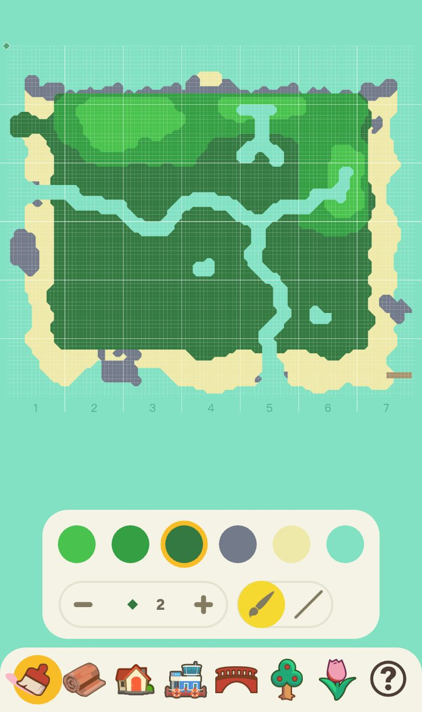
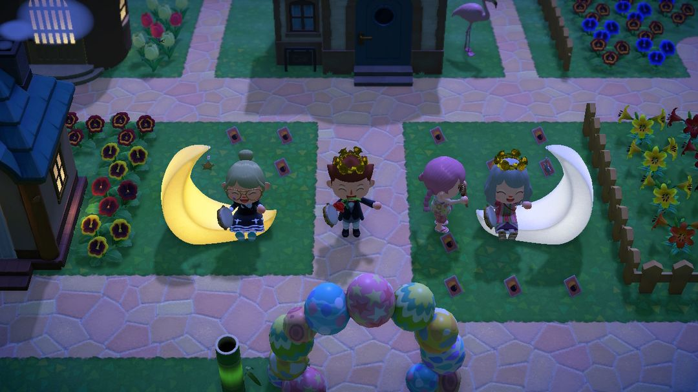
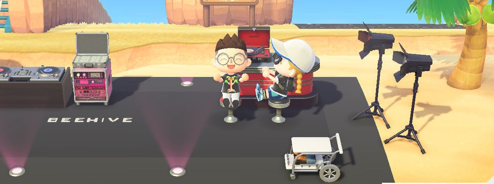
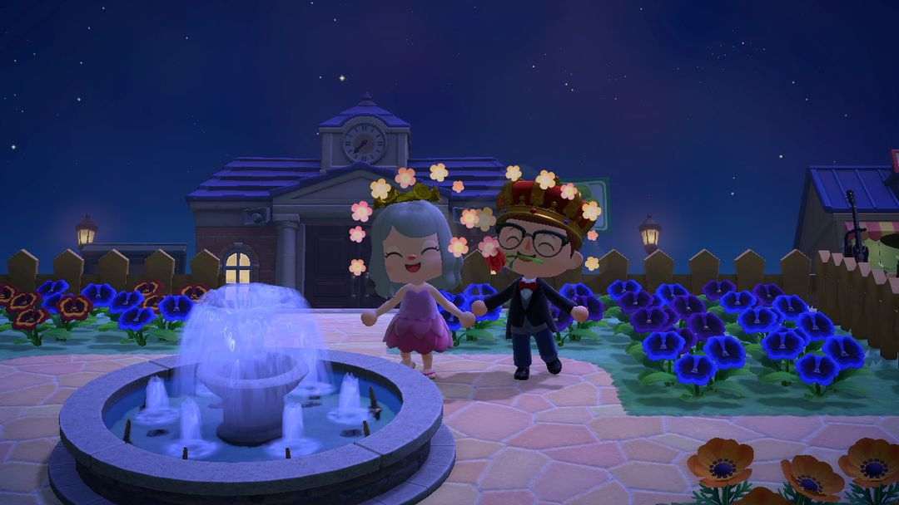
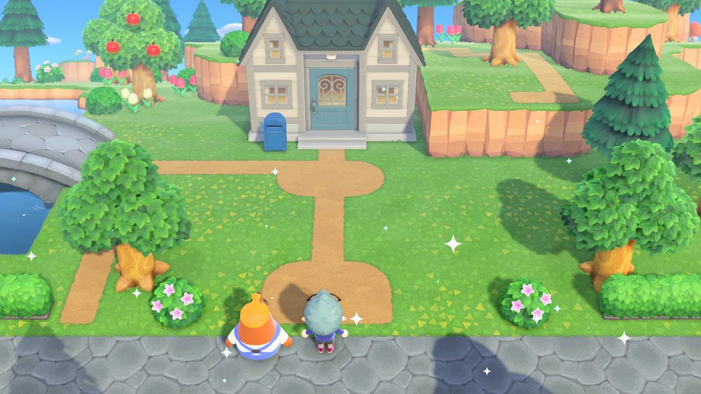
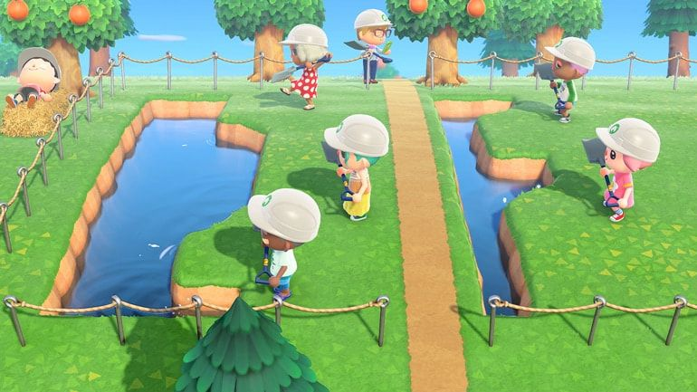

岛建入门：先画图，再动铲子
规划、改地形、铺路、布景，和 3.0 几个省事的帮手
很多人一拿到岛屿创作家就开挖，挖到一半才发现河挡了路、房子摆歪了，只好推倒重来。岛建最费时间的就是返工：搬一栋建筑要花铃钱、等一天，填一条河也得一格一格来。所以动铲子之前，先花点时间把整座岛在纸上或手机上画一遍。
顺序上记住一条就够了：先定建筑位置，再改地形，最后铺路、种花、摆家具。拿不准的布局，可以先去梦之岛上随便试，试满意了再回本岛动工。
01先把岛画出来
岛屿评价到 3 星、看完 K.K. 的演唱会，第二天狸克会把「岛屿创作家」装进你的手机。草地路和泥土路一开始就能铺；石板路、砖块路、木板路这些，以及河流、悬崖的施工许可证，都要去服务处的狸端机拿里数换。
动手前，先把岛大致分成几块，各自想好放什么：
门面区是从机场出来第一眼看到的地方，访客对岛的第一印象就落在这里。
居住区放自己家和岛民的房子。
商业区放商店、裁缝店和博物馆，可以围成一条街，逛起来顺路。
自然区留给果园、花田、树林和海边。
服务处、机场、码头和入海口的位置改不了，把它们当成锚点，其他东西围着它们来排。
建筑的位置可以请狸克帮忙搬：搬自己家 3 万铃钱，商店、博物馆或岛民的房子每次 5 万，一次只能搬一栋，第二天完工。搬一次又贵又慢，所以先把建筑位置定下来，再去改地形，免得地形做好了又要为挪房子拆掉。
规划图可以在网上的岛屿设计器里画，也可以用动森圈圈 iOS App 里的「岛屿规划」，在手机上先把河、悬崖和建筑摆一遍，看看路走不走得通。

「岛屿规划」：底下一排是地形、路、建筑、桥、树、花等工具
02改地形的几个要点
先拆再建，先大后小
悬崖和河流旁边不能有树、石头、家具和建筑，挨着它们就动不了工。所以先把要改的那片区域清空，再做河和悬崖的大轮廓，轮廓定了，最后才铺路、种花。
瀑布两边要夹着悬崖
河流从悬崖上流下来的那一格，两侧都得是悬崖，瀑布才做得出来。反过来，想拆掉一段带瀑布的悬崖，要先把瀑布那段河填平。
桥和坡道各能造 10 座
数量有上限，落差多的岛尤其要算好，每一层都得留出上下的路，别把自己困在高台上。
椰子树种在沙子上
椰子树只长在沙子上。用岛屿创作家铺出沙子路，就能把椰子树种到草地附近，不一定非得挤在海滩上。
小提示3.0 以后按 L 键，角色会对齐到格子上；按住 L 就只往一个方向走。挖河、堆悬崖、铺路、立围栏的时候按住它，就能拉出笔直的一条线。
03铺路和自定义设计
路是岛的骨架。主路铺宽一点，两到三格，把各个区连起来；小路一格宽就够，绕进花田、树林里就行。
除了系统自带的路，还能用「我的设计」铺自定义地砖，石板路、木栈道、花坛边、斑马线都有人做，网上能找到大量现成的设计码，扫码导入的方法见《高级设计》那篇。
用自定义地砖要留意边缘。系统路和草地交界的地方会自动变成圆角，自定义地砖不会，铺完边缘一刀切，看着很生硬。可以挑带草地过渡的设计，或者在边上种灌木、花挡一挡。
另外别把地面铺满。留一些草地和泥土，岛才显得自然。

小路两边用花坛和围栏收边
04用家具摆场景
家具零零散散撒在岛上，看着乱；一组一组摆成小场景就好看得多：定一个主题、挑一个焦点，四周用围栏、灌木、花圈起来。摆的时候有几个小窍门：
同一片区用同一个系列打底，比如原木、铁艺、竹子、大理石，选定一套再往里添东西，风格不容易乱。
靠路的一侧放矮的，后面放高的，前低后高，从路上看过去层次分明，后排也不会被挡住。
场景里留一格走道，访客才能走进去拍照。
摆完晚上也去看一眼。路灯、灯笼、篝火亮起来，夜里的岛是另一种样子。

沙滩上用 DJ台、灯架和地毯搭的小舞台

夜里的广场，喷泉配一圈蓝花
路边摊：最省事的布景
「路边摊」的DIY手册在狸端机用 2,000 里数换，做一个只要 12 个木材。布帘能换成自己的设计，同一个摊子换块布帘，就能变成水果摊、咖啡摊、夜市小吃摊，也能拿来当免费交换台。商店卖的「简单壁板」同样能贴自己的设计，做招牌、菜单、路牌都合适。
053.0 的三个帮手
电源叔叔的整理服务
改岛前清场最磨人，3.0 起可以请电源叔叔代劳。整片沙滩、整座岛，或者你指定的一块区域，地上的家具、花、铺好的设计都能一次清掉，可以选直接扔掉还是收进收纳。第一次免费，之后每天 6 万铃钱，付过钱当天不限次数。杂草、树、灌木和埋在地下的东西，他不管。

请电源叔叔整理过的地方，地上的东西一次清空（图：任天堂）
收纳 9000 格，花和树也能收
以前改岛，花得一株株挪去别处暂放。3.0 起收纳扩到 9000 格，花和树也能直接收起来，改完地形再拿出来种回去。
梦之岛
在床上睡觉时，梦美能带你去「梦之岛」。每人最多能建 3 座，岛上能随便改地形，用图鉴里登记过的家具布置，还能调时间和天气，朋友也能一起来帮着改。梦里的东西带不回本岛，所以它更适合拿来试布局：在梦之岛上把想法摆出来看看效果，满意了再回本岛照着做。去梦之岛需要 Nintendo Switch Online 会员。

梦之岛上几个人一起挖河、改地形（图：任天堂）
06新手常踩的坑
没给新岛民留地。岛上还不满 10 位岛民时，新房子要有空地才建得起来。规划居住区时，把还没搬来的岛民也算进去。
悬崖切得太碎。锯齿状的悬崖不好看，走起来也绕。边缘尽量切顺，转角处留够放坡道的地方。
树种得太密。树挨得太近长不大，种太多还会拖累岛屿评价。想做出森林的感觉，用灌木和花去补。
一口气改全岛。一次只改一个区，改完再开下一块，岛上就不会长期像个工地。
动森圈圈 · 小程序和 iOS App 都搜「动森圈圈」